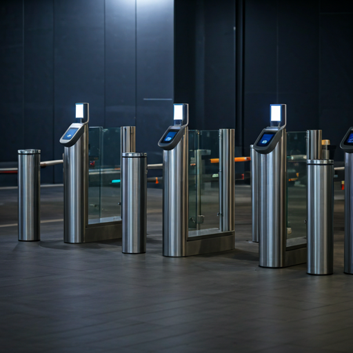

IMMIGRATION FAQ
Your complete guide to a seamless journey. Discover how the e-Gate system makes your travel faster, easier, and completely contactless at Bali's International Gateway.

What is Autogate?
Everything you need to know about the automated border control system at I Gusti Ngurah Rai International Airport.
What is Autogate?
An automated border control system that uses biometric data to verify traveler identity quickly and securely.
Key Benefits
Reduce queue times, zero physical contact with documents during processing, and enhanced security verification.
Locations
Available at both International Departure and Arrival zones of I Gusti Ngurah Rai Airport, Bali.
Common Troubleshooting
Issues during the process? Here's what to do.
Ensure you have removed any passport cover. The photo page must be flush against the glass. If the issue persists, a nearby officer will assist you immediately.
Please remove masks, sunglasses, or hats. Stand still and look directly into the lens. Ensure the lighting is not being blocked by your position.
Indonesian citizens with non-ePassports can use the Autogate. However, foreign nationals MUST have an e-Passport to use the automated system.
The Autogate process is fully digital. You will not receive a physical ink stamp. Your entry/exit record is stored electronically in the SIMKIM system.
Pre & Post Immigration FAQ
Frequently asked questions about your journey before and after immigration checks.
Before Departure / Arrival
Sebelum Keberangkatan / Kedatangan
circleDo I need a visa before arriving in Bali?
Foreigners from 90+ countries are eligible for e-VOA. We recommend applying online at molina.imigrasi.go.id for a faster experience.
circleIs the Arrival Card mandatory?
Yes, every traveler must fill out the Electronic Customs Declaration (ECD) before passing customs. You can do this within 48 hours of arrival.
circleWhere can I check my visa status?
You can check your status through the official immigration portal or the "Check Status" link in our navigation menu.
After Immigration
Setelah Pemeriksaan Imigrasi
circleWhere is the baggage claim area?
Baggage claim is located immediately after the immigration hall. Check the monitors for your flight number and carousel.
circleWhat facilities are available after arrival?
The airport offers currency exchange, ATM centers, SIM card counters, and transportation desks (Taxi/Ride-hailing) in the public arrival hall.
circleCan I re-enter the sterile area?
No, once you have passed the final exit and entered the public area, re-entry to the sterile immigration area is strictly prohibited.
Eligibility
Who is permitted to use the digital gateway?
Indonesian Citizens (WNI)
All Indonesian passport holders (electronic and non-electronic) can use the Autogate for departure and arrival.
Children 6+
Children aged 6 and above are eligible to use the Autogate with their own passport.
Foreign Nationals (WNA)
Foreigners with Electronic Passports (e-Passport) and valid visas (e-VOA, e-Visa) or KITAS/KITAP are eligible.
- checkASEAN Visa-Free Entrance
- checkE-Visa / E-VOA Holders
Required Documents
Ensure you have these ready before approaching the gate.
Physical Passport
Original document with minimum 6 months validity.
Boarding Pass
Valid flight boarding pass for the current departure/arrival.
Digital Visa / VOA
Electronic visa records linked to your passport number.
Arrival Card
Electronic Customs Declaration (ECD) filled out before arrival.
Process Flow
Five simple steps to clear immigration in seconds.
Scan Passport
Place passport photo page down on the scanner glass.
Data Verification
System validates your biometric and visa information.
Enter Gate
Step into the gate once the first door opens.
Face Scanning
Look directly at the camera. Remove hats and masks.
Process Complete
Second door opens. Proceed to the terminal.
Immigration Autogate Service Information, Complaint, and Evaluation Form
If you have further questions or wish to give feedback about our services, please fill out the digital form via the link below.
descriptionFill the Form